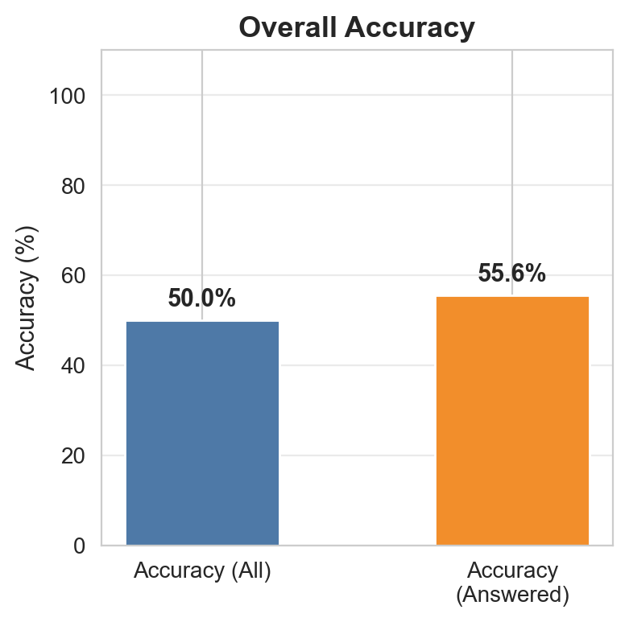
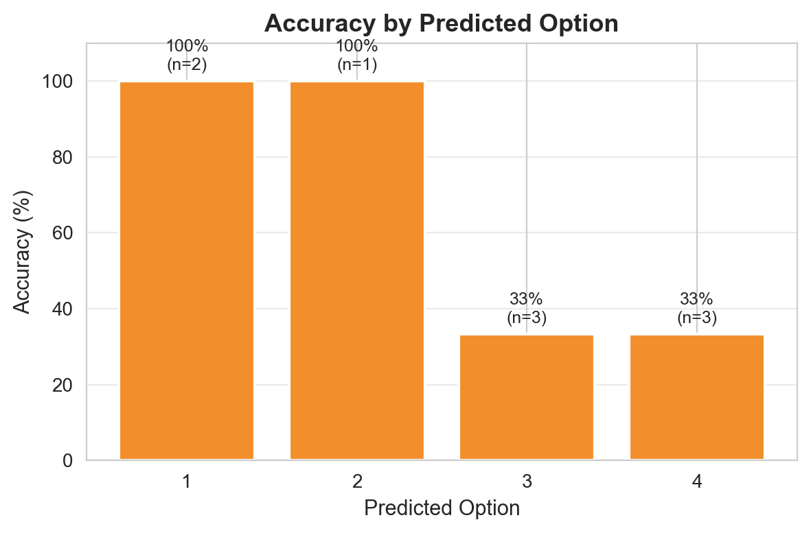
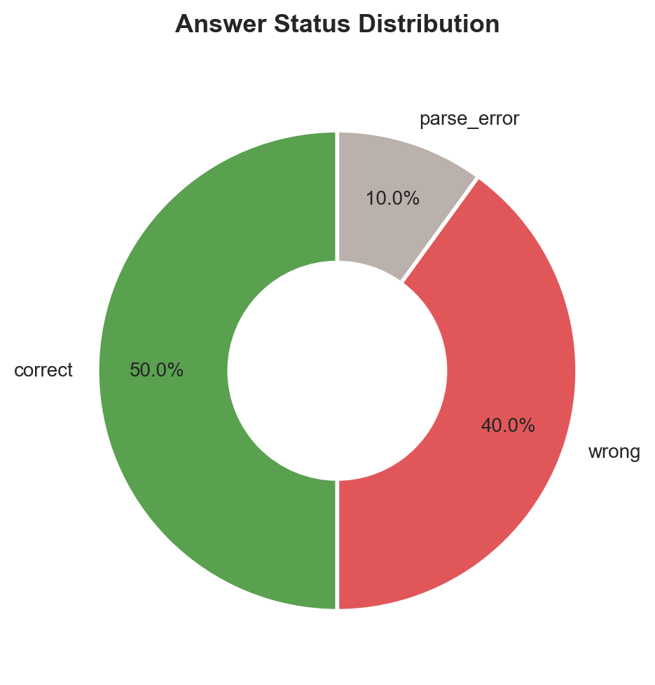
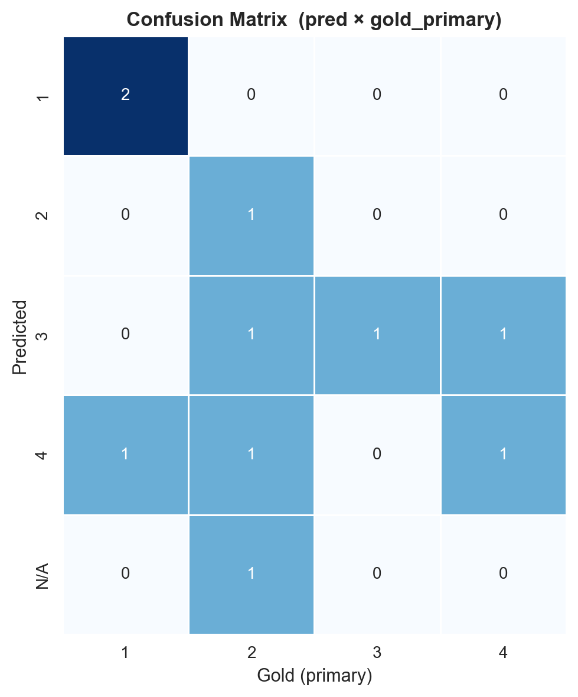
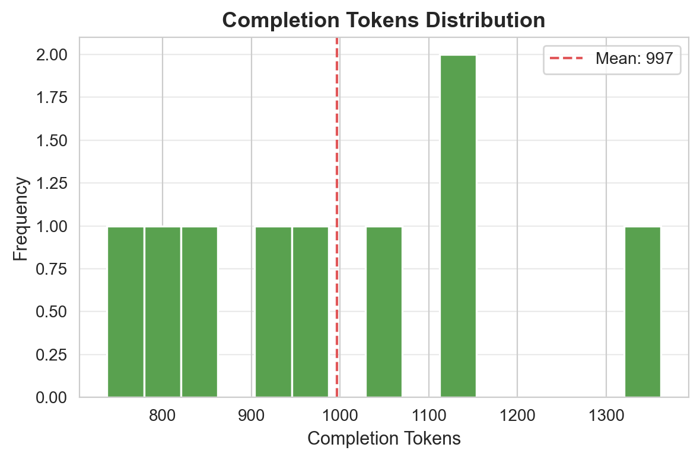
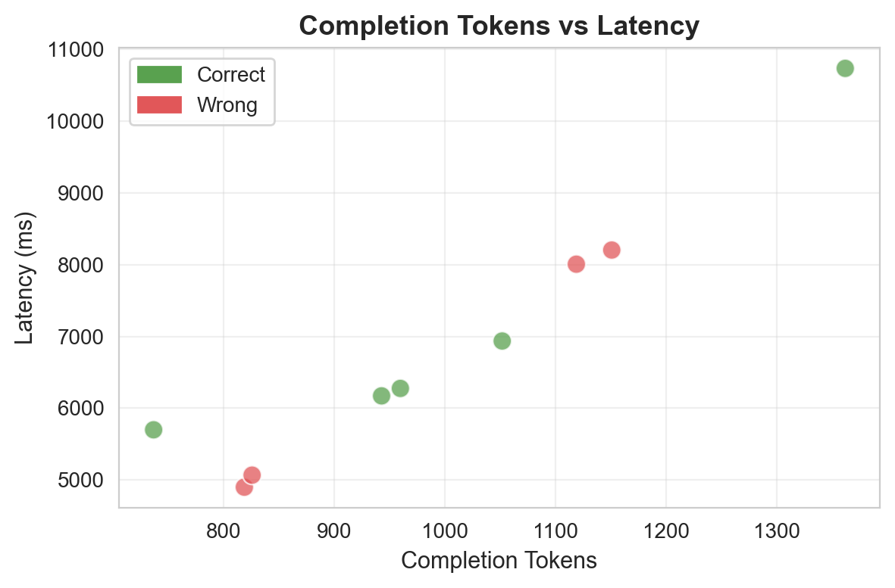
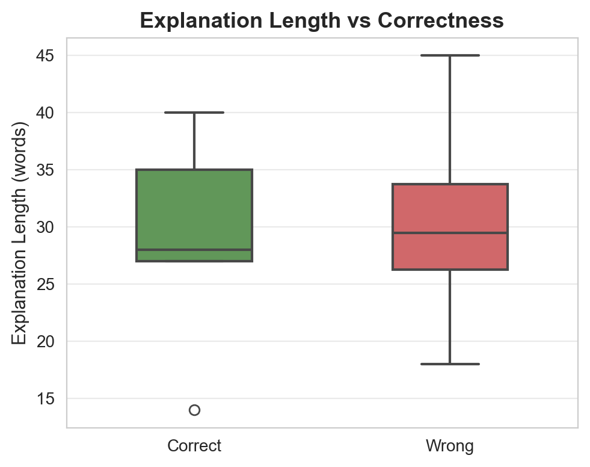
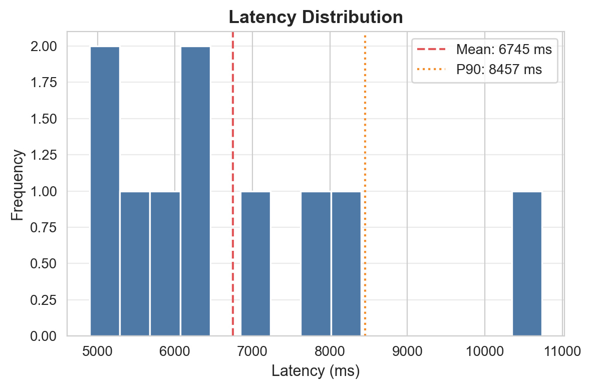
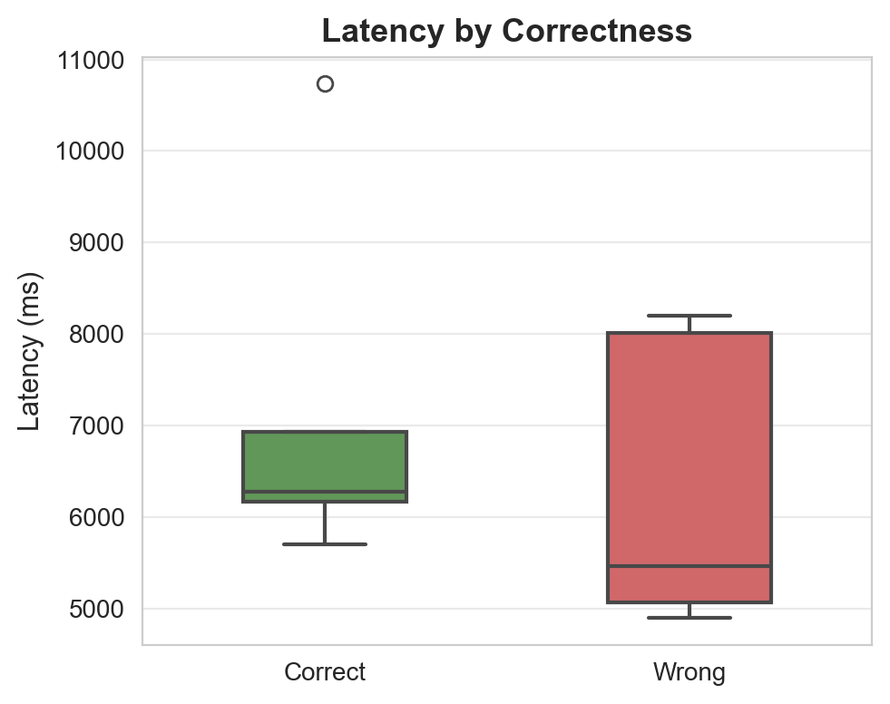

سوالات: 10 | پاسخدادهشده: 9 | بیپاسخ/خطا: 1

دقت کلی مدل

دقت به تفکیک گزینه

توزیع وضعیت پاسخها

ماتریس درهمریختگی

توزیع توکنهای خروجی

توکن vs تأخیر

طول توضیح vs صحت

توزیع تأخیر

تأخیر به تفکیک صحت
| ID | پاسخ مدل | پاسخ صحیح | نتیجه | تأخیر (ms) | توکن | خلاصه استدلال |
|---|---|---|---|---|---|---|
| 1 | 3 | 3 | ✅ | 10737 | 1362 | به موجب ماده ۷۳۳ قانون مدنی، فسخ بیع تأثیری در صحت عقد حواله ندارد مگر اینکه شرط شده باشد و مسئولیت استرداد ثمن برعهده بایع (ب) است... |
| 2 | 1 | 1 | ✅ | 6171 | 943 | دلیل لبّی فاقد ظهور لفظی است و در مقام استناد به آن، باید به حداقل قدر متیقّن و یقینی اکتفا کرد و اصول لفظی در آن جاری نمیشوند... |
| 3 | — | 2 | ❌ | 5462 | — | — |
| 4 | 1 | 1 | ✅ | 6275 | 960 | به موجب ماده ۲ قانون جرایم سیاسی، توهین به رؤسای سه قوه و رئیس مجمع تشخیص مصلحت نظام در صورت وجود انگیزه سیاسی و عدم قصد ضربه به اصل نظام، میتواند جر... |
| 5 | 3 | 4 | ❌ | 8204 | 1151 | ترکه فاقد شخصیت حقوقی مستقل است و ابراء ذمه میت در واقع ابراء از ورثه او محسوب میشود... |
| 6 | 4 | 2 | ❌ | 4898 | 819 | به موجب تبصره ماده ۱۰۷ قانون آیین دادرسی مدنی، خواهان میتواند تا پایان دادرسی دعوای خود را مسترد کند و دادگاه قرار رد دعوا صادر مینماید که قابل تجدی... |
| 7 | 2 | 2 | ✅ | 6936 | 1052 | به موجب ماده ۳۰۳ قانون آیین دادرسی مدنی، ارسال لایحه دفاعیه توسط خوانده، حتی در صورت عدم حضور در جلسه، موجب حضوری تلقی شدن رأی میشود و آرای حضوری نیز... |
| 8 | 4 | 1 | ❌ | 5066 | 826 | به موجب ماده ۲۱۳ لایحه اصلاحی قانون تجارت، مدیر یا مدیران تصفیه را همان مرجعی که آنها را انتخاب کرده است (که میتواند مرجع قضائی باشد) میتواند عزل ک... |
| 9 | 4 | 4 | ✅ | 5698 | 737 | طبق نص صریح اصل ۱۴۱ قانون اساسی، «مشاوره حقوقی» برای کارمندان دولت ممنوع است... |
| 10 | 3 | 2 | ❌ | 8007 | 1119 | به موجب اصل ۱۶۷ قانون اساسی و ماده ۳ قانون آیین دادرسی مدنی، قاضی مکلف است ابتدا حکم دعوا را در قوانین مدون بیابد و استناد مستقیم به نظریه فقهی در صور... |